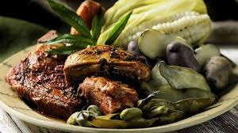

Comidas de sierra
Cuy chactado

- Piel crocante y dorada: La fritura en abundante aceite o grasa permite que la piel del cuy quede crujiente y sabrosa.
- Sabor intenso y sazonado: Se marina con especias locales como ajo, comino, sal y a veces ají, que realzan el sabor natural del cuy.
- Plato tradicional y festivo: Es una preparación típica en las zonas andinas, muy apreciada en celebraciones y eventos culturales.
olluqito con charqui

- Uso del olluco: El olluco es un tubérculo andino con una textura firme y ligeramente mucilaginosa que absorbe muy bien los sabores del guiso.
- Carne deshidratada (charqui): El charqui aporta un sabor concentrado y salado, típico de la conservación ancestral de carnes en la sierra.
- Plato tradicional y nutritivo: Es una preparación energética, ideal para las condiciones climáticas y culturales de la zona andina, y representa la conexión con la agricultura y ganadería local.
Pachamanca

- Cocción en horno de tierra: Los alimentos se cocinan sobre piedras calentadas en un hoyo, cubiertos con hojas de plátano o paico y tierra, lo que les da un sabor ahumado y terroso muy especial.
- Variedad de ingredientes: Incluye diversas carnes (pollo, cerdo, cordero, res), tubérculos (papa, camote, olluco), maíz, habas y hierbas aromáticas, creando un plato completo y nutritivo.
- Plato tradicional amazónico: Es un plato típico y muy representativo de la cultura culinaria de la selva peruana, especialmente popular en regiones como San Martín y Loreto.
- Ritual y tradición: Es una preparación comunitaria que representa la conexión con la Pachamama (Madre Tierra) y las raíces culturales andinas.